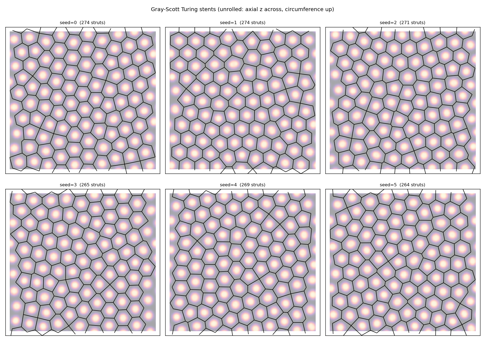
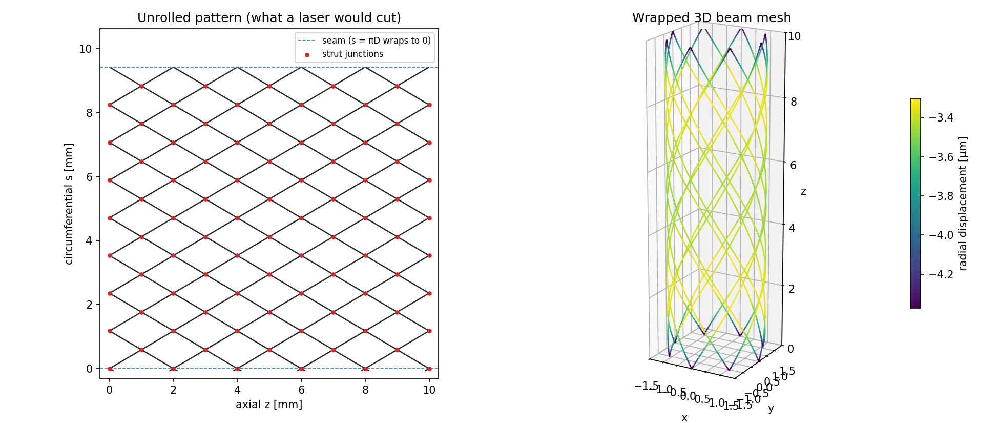
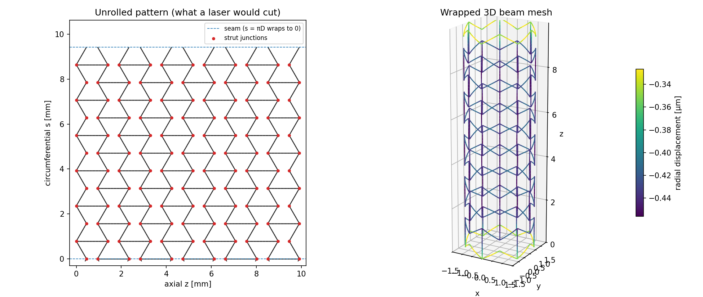
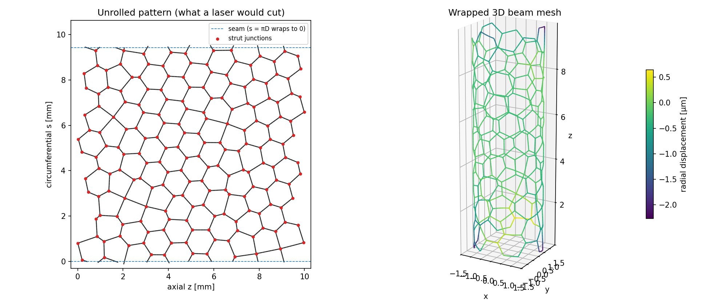
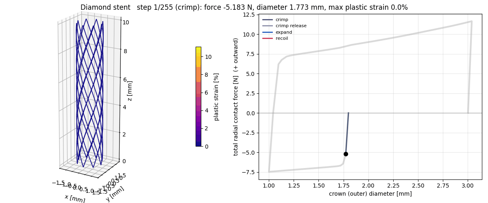
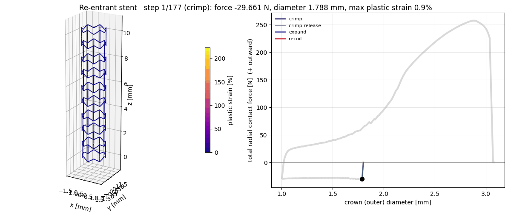
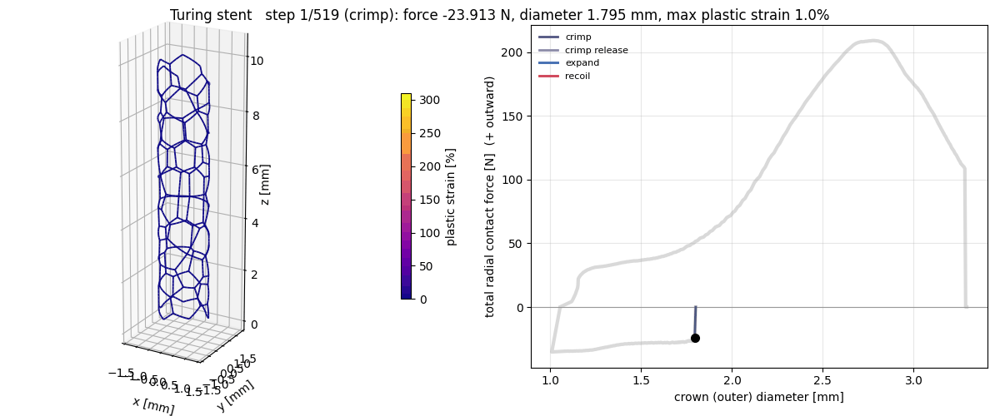
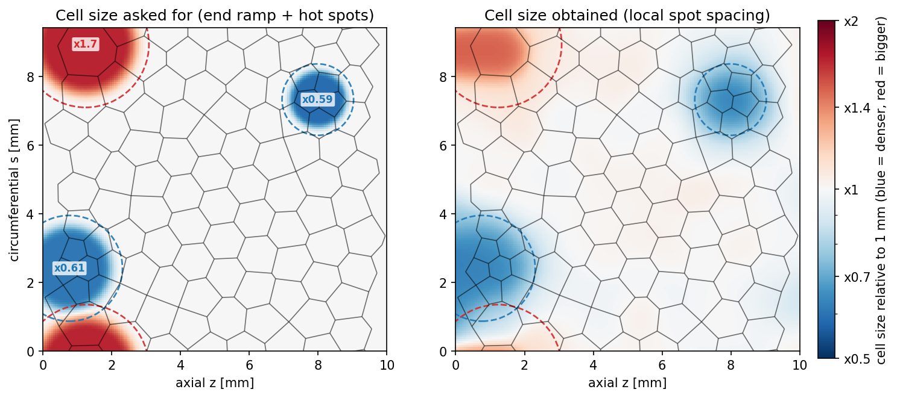

Stent FEA: a virtual test bench for stent designs
Add the context: which group or course, who it's with, and the dates.I wrote a Python pipeline that generates stent designs, or imports a flat stent drawing, wraps each one onto a cylinder as 3D beams, and runs the same finite-element tests on every design so they can be compared directly.
The pyFEM repo isn't public yet. Upload it, or point this link at the right URL.
The project
Coronary stents are small metal mesh tubes that are crimped onto a balloon, pushed through an artery and expanded to hold it open. The strut pattern drives almost everything that matters: how hard the stent pushes back against the artery, how easily it bends through curved vessels, how much it shortens when expanded, and how far its struts strain on the way.
The goal was a bench where any strut pattern, whether a standard diamond, an auxetic (negative Poisson's ratio) design or an organic pattern grown by a reaction–diffusion simulation, goes through the same tests and produces the same metrics. That makes a new design idea something you can test rather than argue about. Material: 316L stainless steel, 3.0 mm diameter, about 10 mm long.
What I did
Three design generators, plus an importer
- Diamond: the conventional baseline.
- Re-entrant (auxetic): zig-zag rings joined by axial walls into inward-pointing bow-tie cells. Squeezing it makes it shorter, the opposite of a diamond, which is why auxetic stents are studied as a way to cancel foreshortening.
- Turing patterns: a Gray–Scott simulation grows spots on the unrolled stent surface, and I extract a strut network from them. Changing the diffusion rate locally changes the cell size locally, so I added "hot spots", patches of denser or bigger cells placed anywhere on the stent.
- Importer: reads a flat pattern drawing (DXF, SVG or CSV), rebuilds the junctions, stitches the seam and runs the same tests.



The same tests on every design
Each design is meshed with 3D Timoshenko beams and solved in PyFEM under two load cases:
- Radial: 100 mmHg of pressure squeezing the stent, standing in for the artery.
- Pure bending: the stent following a curved vessel.
From these come radial stiffness, bending stiffness, Poisson's ratio and foreshortening, a dog-bone index (whether the ends are softer than the middle), peak strut stress, the pulsatile stress from a heartbeat, and a crimp strain factor (how much the worst strut strains per unit change in diameter).
| Metric | Diamond | Re-entrant | Turing | Turing, large cells |
|---|---|---|---|---|
| Metal coverage (%) | 19.7 | 21.8 | 18.5 | 9.7 |
| Radial stiffness (N/mm) | 360 | 2969 | 4445 | 446 |
| Bending stiffness (N·mm²) | 810 | 291 | 1659 | 226 |
| Poisson's ratio | 0.34 | −1.36 | 0.69 | 0.64 |
| Dog-bone index | 1.15 | 0.85 | 3.05 | 5.43 |
| Crimp strain factor | 0.18 | 0.63 | 1.77 | 0.71 |
Checking the numbers before trusting them
I checked the model against known answers before using it to compare designs:
- Strut strains match hand-calculated cantilever bending to within 0.01%.
- The diamond's Poisson's ratio (0.337) matches the hinge-lattice prediction within 3%.
- The re-entrant design's Poisson's ratio (−1.36) matches Gibson & Ashby honeycomb theory within 6%.
- An independent numpy beam solver agrees with PyFEM within 0.8–2.5%.
- In a mesh-convergence study, the stiffness metrics settle to about 1%.
Plasticity, and the full crimp-and-balloon cycle
Linear tests can't show what happens when a stent is actually deployed, so I wrote a yielding beam element: each strut cross-section is split into an 8 × 8 grid of fibres that yield and harden independently. I validated it against exact solutions, then built two tests on it:
- Free expansion: recoil, foreshortening and dog-boning.
- The full deployment cycle: crimp from 1.8 to 1.0 mm with a rigid crimper, release, expand to 3.0 mm with a rigid balloon, and deflate.
The re-entrant and Turing designs stalled partway through the crimp. I traced the stall to a real twisting instability (it wasn't a solver setting), and added Abaqus-style automatic stabilization to carry the run through it.




What I learned
- Linear stiffness can mislead. The Turing stents were about 12× stiffer radially than the diamond, which looks like a win. But the plastic cycle showed a few short struts taking most of the deformation, with strains far past what 316L survives. Design comparisons need the nonlinear test, not just the linear one.
- Validate each piece against something you can calculate by hand. Every new element and load case got a check against an exact answer before I used it. That caught real bugs early and gave me grounds to trust the design comparisons.
- When a solver stalls, find out why before changing settings. The crimp stall looked like a convergence problem. Ruling out material, tangent, contact stiffness and mesh one at a time showed it was a physical twisting instability, which pointed to the right fix.
- Be clear about what a model can't tell you. Beam elements treat junctions as points, the balloon is rigid and there's no strut-to-strut contact. I kept a written list of limitations next to the results, so the numbers are used to rank designs, not as absolute predictions.
Links
- Source code and full write-up (README and docs/DETAILS.md)
- PyFEM, the open-source finite-element solver this builds on